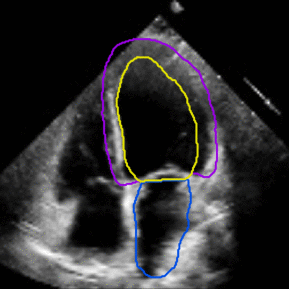
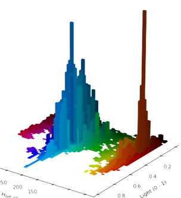
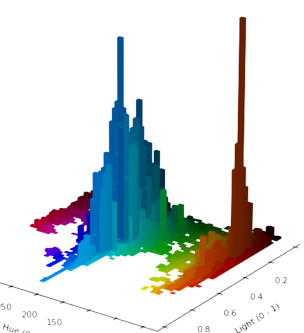

About Me
Computer Science PhD candidate at Harvard Insight + Interaction Lab led by Prof. Fernanda Viegas and Prof. Martin Wattenberg. 📖 I am interested in making generative AIs more controllable through mechanistic interpretability and internal world models.
Before entering Harvard, I was a Computer Science and Engineering student at Bucknell University 🦬. My past projects focused on automating the video-based semantic segmentation of sparsely annotated medical videos using multi-task learning. 🧡 My works were funded by the Ciffolillo Healthcare Technology Inventors Program (HTIP). 🏥 Our papers ( [1] [2] ) are published at the SPIE Medical Imaging 2021 & 2022 Conferences with oral presentations. 📝 I was advised by Prof. Joshua Stough (Bucknell University) and Prof. Christopher Haggerty (Columbia University & New York-Presbyterian) at Bucknell. 🎓
I also developed a color analysis toolkit for films (KALMUS). 🎬 You can find the project's GitHub Repo here, KALMUS-Color-Toolkit. KALMUS' development is supported by the Mellon Academic Year Research Fellowship awarded 🥇 by Bucknell Humanities Center, and now used as a instructional software at Bucknell.
Judge for National Collegiate Research Conference 2024 (NCRC) at Harvard.
Bulletin Board 📋
Do Language Models Learn Causal Representations of Space?
Recent work from Gurnee et al. show that the activations of neural language models have high correlation with the spatial and temporal properties of their inputs. However, the work didn't estabilish a causal link between two. Our experiments, filling a part of this blank, show that the spatial representation has causal influence on the model's behavior. Editing LLM's spatial representations can improve the model's performance on a simple spatial task.

Paper Preprint
Probe, Intervene, & Control the 3D Representations in Diffusion Model
Does the 2D image generative model has an internal model of 3D geometry? Can a 2D neural network see beyond the X-Y dimension of a matrix of pixels? Our project found controllable representations of 3D geometry inside diffusion model.

Paper
Video Presentation (54K Views)
Visualize Attention Flow inside Large Transformer Models
Wonder how attention flows inside your Vision Transformer? What visual patterns are recognize by machine's attention? Does machine's attention resemble human's visual cognition? Collaboration with Catherine Yeh. My main contribution is the visualization of learnt attention in vision transformer models.

Fully Automated Full-Video Multi-heartbeat Echocardiography Segmentation
We aim to further improve the accuracy and clinical applicability of echocardiography video segmentation by extending the analysis from half-heartbeat (End-diastolic to End-systolic phases) to multi-heartbeat video. Uisng supervised deep learning, we proposed a fully automated neural network-based segmentation method for sparsely annotated multi-heartbeat echocardiogram. Our proposed neural network exploited the spatiotemporal convolutions in extracting video features. Our paper about this project has been accepted for an oral presentation at SPIE Medical Imaging 2022: Image Processing Conference, webpage .

Joint Motion Tracking and Video Segmentation of Echocardiography
We trained a 3D-UNet to segment and predict the motion of cardiac structures in the Echocardiography Video. The convolutional neural network is implemented in PyTorch and trained with dual Nvidia Titan RTX graphics cards. The experimental results show that the motion tracking task enhances the learning of video segmentation. Video segmentation, compared to the traditional frame segmentation, produces temporally coherent segmentation on cardiac structures, such as left ventricles. The temporally coherent segmentation further improves the estimations on patients' left-ventricular ejection fractions using segmented echocardiography video.

KALMUS: tools for color analysis of films
KALMUS is a Python package for the computational analysis of colors in films. It provides quantitative tools to study and compare the use of film color. This package serves two purposes: (1) various ways to measure, calculate and compare a film’s colors and (2) various ways to visualize a film’s color.
 

Stochastic method for optimizing stock trading strategy
Course Project of Math 343: Numerical Analysis
This project implements and extends a stochastic approximation (SA) method proposed by Song et al. [1]. This SA method aims to find an optimal set of buying and selling thresholds for trading a stock. The method assumes the stock has a mean-reversion property so the stock price will oscillate around a long-term average.
[1] Q. S. Song, G. Yin, and Q. Zhang, “Numerical methods for buying-low-and-selling-high stock policy,” 2008 American Control Conference, 2008, https://doi.org/10.1109/ACC.2008.4586627

R Visualizations: Data, Arts, COVID, and Cardiology
Portfolio Website for Math 230: Data Visualization
This website hosts the visualization and generative artworks that I created during the course.
The project is implemented in R, and the portfolio website is built with Distill.


Open Source Projects 💻
Linear probe found representations of scene attributes in a text-to-image diffusion model
Demo Githubyida-r-visualization-portfolio-website
Yida Chen's course project for MATH 230: Data Visualization instructed by Prof. Abby Flynt at Bucknell University.
Demo GithubThe implementation of CLAS-FV described in "Fully automated multi-heartbeat echocardiography video segmentation and motion tracking".
Demo GithubCOVID-19_Radiography_Classification
Kaggle COVID-19 Radiography Classification Project
Demo GithubSkills 🤺
My journey so far... 🛸
For more information, have a look at my curriculum vitae .
-
Jan 2024
Served as the judge for National Collegiate Research Conference 2024 at Harvard. Reviewed and oversaw 8 undergraduate student projects.
Harvard NCRC Judge -
Aug 2022
I am now a new member of Insight + Interaction Lab at Harvard SEAS. It's so exciting to work with everyone here! Check out our group: Insight + Interaction Lab.
Harvard Ph.D. Insight + Interaction -
May 2022
I graduated from Bucknell with Bachelor degree in Computer Science & Engineering and Summa Cum Laude distinction. I am pleased to receive the Bucknell Prize in Computer Science and Engineering (1 per class year), University Prize for Men, and President’s Award for Distinguished Academic Achievement.
In this fall, I will join the Harvard SEAS to pursue a Doctorate degree in Computer Science. It's my honor to be mentored by Prof. Fernanda Viegas and Prof. Martin Wattenberg ( Insight + Interaction Lab).
Bucknell Undergraduate Graduation -
Apr. 2022
Our paper, "Fully automated multi-heartbeat echocardiography video segmentation and motion tracking", has been published at the SPIE Medical Imaging 2022: Image Processing Conference.
You can find the manuscript and recorded presentation here: link.
Published SPIE Medical Imaging Oral Presentation -
Oct. 2021Our work, "Fully automated multi-heartbeat echocardiography video segmentation and motion tracking", has accepted for an oral presentation at SPIE Medical Imaging 2022: Image Processing Conference.Accepted SPIE Medical Imaging Oral Presentation
-
June 2021 - PresentHTIP research fellow for fully automated multi-heartbeat echocardiography video segmentation projectPyTorch Scikit-Learn Matplotlib Python
-
May 2021
Our paper, "KALMUS: tools for color analysis of films", has been published on the Journal of Open Source Software! Our manuscript is open access, and you can find it here: link.
The GitHub repo of associated Python package, KALMUS, is here: link.
For installation instruction and detailed usage guide, please refer to the KALMUS documentation page.
Published JOSS Open Access KALMUS Python Package -
Feb. 2020
Our paper, "Assessing the generalizability of temporally-coherent echocardiography video segmentation", has been published at SPIE Medical Imaging: Image processing 2021 conference!
You can find the manuscript here: link.
The presentation slides are available here: link.Published SPIE Oral Presentation Ei Compendex -
Oct. 2020
Our paper, "Assessing the generalizability of temporally-coherent echocardiography video segmentation", has been accepted for an oral presentation by SPIE Medical Imaging: Image processing 2021 conference!
The preprint of paper is available here: link.
Accepted SPIE Oral Presentation -
Aug. 2020 - Dec. 2020Residential AdvisorLeadership Communication
-
June 2020 - May 2021HTIP research fellow for joint motion tracking & echocardiography segmentation project.PyTorch Scikit-Learn Matplotlib Python
-
Nov. 2019 - May 2021Mellon academic year research fellow for Film Color Analysis. Built a tool, KALMUS, for quantitative color analysis in film production.OpenCV Scikit-Image Matplotlib GitHub CI Codecov Python
-
2018 - 2022B.S. Computer Science and EngineeringC++ Haskell Andriod Java JavaFX
Contact 📪
Thank you so much for visiting my website!